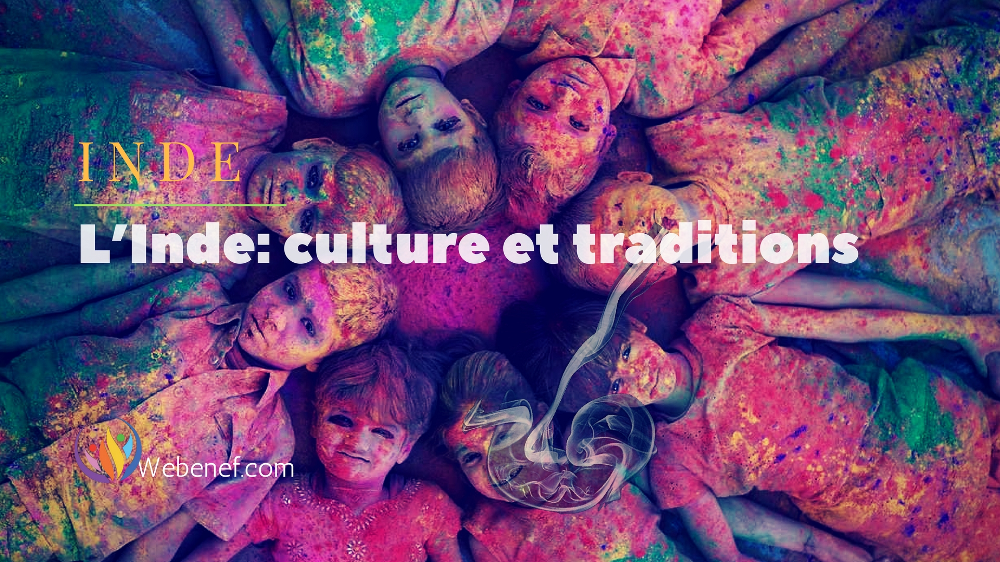

L'Inde est le deuxième pays le plus peuplé et le septième pays le plus grand du monde.
Le nom du pays « Inde » est dérivé de la version en vieux persan, « hindu »,
du mot sanskrit « Sindhu », l'appellation du fleuve Indus en sanskrit; pour
bien savoir, "sanskrit" est la plus ancienne langue indienne. Dépaysante,bruyante,colorée,riche en contraste et en saveur, l'Inde est une déstination
qui ne laisse pas indifférent. Elle aura beaucoup à offrir à ceux et celle qui prendront
le temps de venir la visiter.
La culture et les traditions de l'Inde le distinguent des autres pays du monde.
La culture indienne est d'une richesse et d'une beauté incommensurables.
Idéale pour ceux et celles qui sont en quête de spiritualité, elle est le pays de la relaxation et du yoga.
Des fêtes merveilleuses pourront notamment rythmer votre séjour. Si elles sont nombreuses, Holi, la fête des couleurs,
est certainement l'une des plus marquantes pour les occidentaux de passage. L’inde est un pays où les coutumes et la tradition sont dépendantes de la religion.
Le quotidien des indiens est rythmée par les cérémonies hindoues nombreuses et animées.
Le sacré est présent partout, dans chacun des gestes quotidiens.

La civilisation de l'Inde est aussi encienne que les civilisations de l'Egypte.
L'Inde est également connue pour certains des plus grands progrès en architectures, en mathématiques et en médecine. Voici quelques exemples:
Monuments touristiques comme le celèbre TAJ MAHAL
Le terrain de cricket Chail à Himachal Pradesh qui est le plus élevé dumonde et a été construit en 1893
Le chiffre 0 a été inventé en Inde